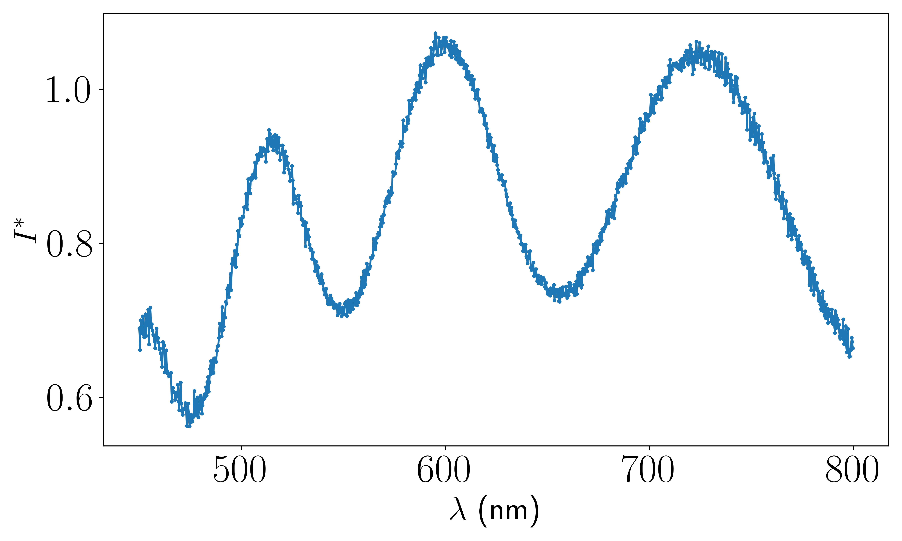
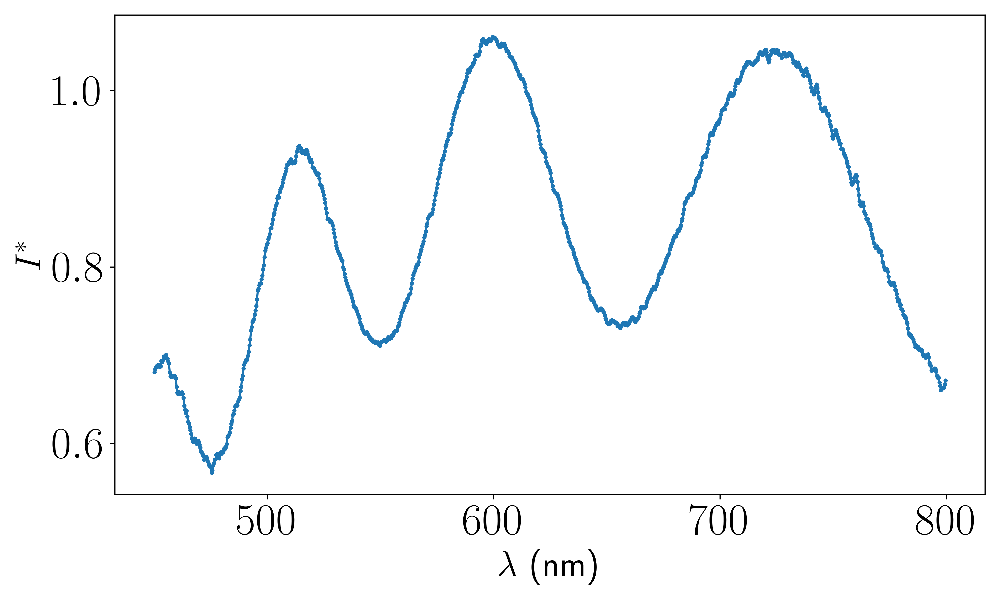
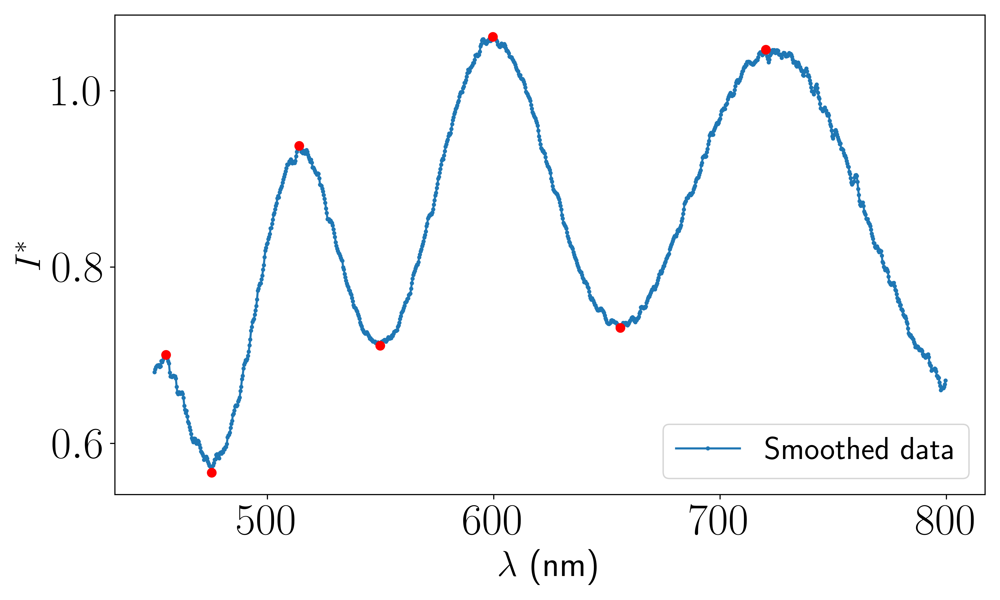

Examples#
In this section, we demonstrate how to use the three implemented methods for film thickness determination on a dataset. Since these methods rely on peak detection, we begin by illustrating the peak detection process.
Step 1 : Loading Experimental Data from a .xy File#
Before applying any thickness analysis method, the first step is to acquire the data using a spectrometer. The spectrometer typically exports the raw spectral data in a .xy file format, which is essentially a plain text file containing two columns :
The wavelength :math:`lambda` (in nanometers)
The corresponding intensity :math:`I^star` (in u.a)
Here is an example of the raw content in such a file using the NanoCalc 2000 VIS/NIR spectrometer :
``` 399.985280,0.396825 400.329500,0.416667 400.673680,0.493333 401.017820,0.378049 401.361920,0.416667 401.705980,0.459459
Let’s suppose this file is saved at the path: C:\path\to\your\data\sample_spectrum.xy
To load this data directly into Python, we use the function load_spectrum from the optifik.io module.
Code :#
```python from optifik.io import load_spectrum
Define the path to the folder containing your .xy file#
Data_folder = r’C:\path\to\your\data’
Load wavelengths and intensities from the file#
lambdas, intensities = load_spectrum(Data_folder, wavelength_min=450)
load_spectrum automatically reads the .xy file in the given folder.
You can specify wavelength_min and wavelength_max to remove irrelevant data.
The function returns:
lambdas: an array of wavelengths (in nm)intensities: the corresponding measured intensities
The data can be ploted with the function plot_spectrum from the optifik.analysis module. Here an exemple of plot you can obtain.

```python from optifik.analysis import plot_spectrum
Intensity as a function of wavelength#
plot_spectrum(lambdas,intensities)
Step 2 : Data Smoothing#
Once this data is loaded, you can apply a Savitsky-Golay filter of order 3 and a window of 11 points to smooth the data. We use the function smooth_intensities from the optifik.analysis module. Here an exemple of plot you can obtain with the function plot_spectrum.

Code :#
```python from optifik.analysis import smooth_intensities
Smoothing the intensity#
Intensities_smoothed = smooth_intensities(intensities)
Smoothed intensity as a function of wavelength#
plot_spectrum(lambdas, Intensities_smoothed)
Step 3 : Find peaks#
The scipy function find peaks is then applied to the smoothed data with the optifik.analysis module. Here an exemple of plot you can obtain.

Code :#
```python from optifik.analysis import finds_peak
Peak detection function#
finds_peak(lambdas, Intensities_smoothed, min_peak_prominence=0.018, min_peak_distance=10, plot=True)
Complete Code :
```python from optifik.io import load_spectrum from optifik.analysis import plot_spectrum from optifik.analysis import smooth_intensities from optifik.analysis import finds_peak
Define the path to the folder containing your .xy file#
Data_folder = r’C:\path\to\your\data’
Load wavelengths and intensities from the file#
lambdas, intensities = load_spectrum(Data_folder, wavelength_min=450)
Intensity as a function of wavelength#
plot_spectrum(lambdas,intensities)
Smoothing the intensity#
Intensities_smoothed = smooth_intensities(intensities)
Smoothed intensity as a function of wavelength#
plot_spectrum(lambdas, Intensities_smoothed)
Peak detection function#
finds_peak(lambdas, Intensities_smoothed, min_peak_prominence=0.018, min_peak_distance=10, plot=True)
```python (array([ 75, 300, 632], dtype=int64), array([ 15, 191, 454, 840], dtype=int64)
The console output shows the wavelength peak indices for both minima and maxima.
The minimum peak prominence is set to 0.018 and the minimum peak distance is set to 10, but these parameters can be adjusted.
For this example, 7 peaks have been successfully detected.
In the following, we will distinguish three cases based on the number of peaks detected in the spectrum, each of which will be treated differently. The procedure described above is assumed to have been followed.